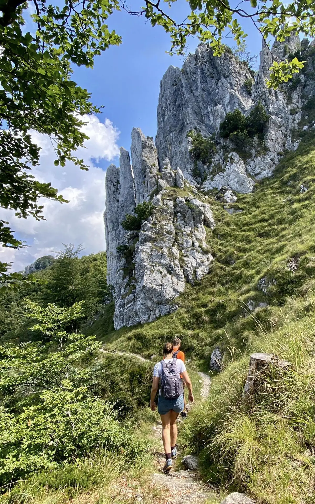
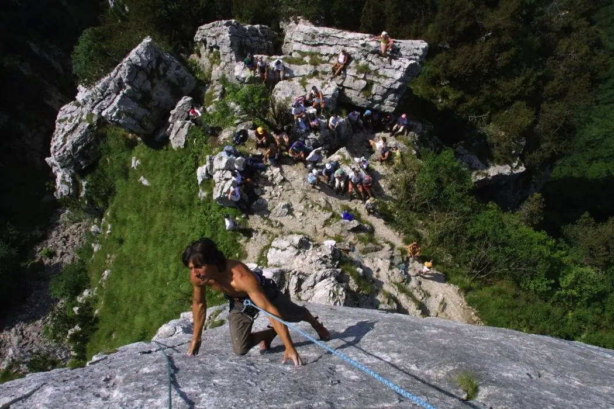
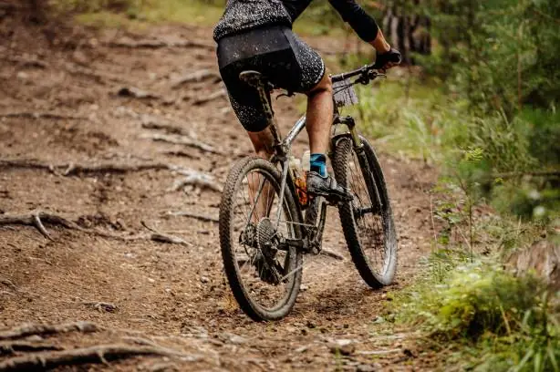

Randonnée
De la baita à l’Alpe Bolla 3 h, à Villa Luganese 3 h, au sommet de la Fojorina 4 h ; de Brè à la baita 4-5 h ; de la baita à la Capanna San Lucio 4 h et à la Capanna Monte Bar 6 h, ou 9 h par les sommets de la Fojorina et du Gazzirola.
Des randonnées vers les sommets et cabanes alentour, plus de 200 voies sur le calcaire des Denti della Vecchia et le Lugano Bike 66.

De la baita à l’Alpe Bolla 3 h, à Villa Luganese 3 h, au sommet de la Fojorina 4 h ; de Brè à la baita 4-5 h ; de la baita à la Capanna San Lucio 4 h et à la Capanna Monte Bar 6 h, ou 9 h par les sommets de la Fojorina et du Gazzirola.

Les Denti della Vecchia sont un paradis de l’escalade avec plus de 200 voies sur calcaire. Le guide du Gruppo Scoiattoli est en ligne sur scoiattoli.ch ; un exemplaire imprimé est aussi consultable à la baita.

Plusieurs itinéraires traversent les environs, et la baita est tout près de l’itinéraire Lugano Bike 66.